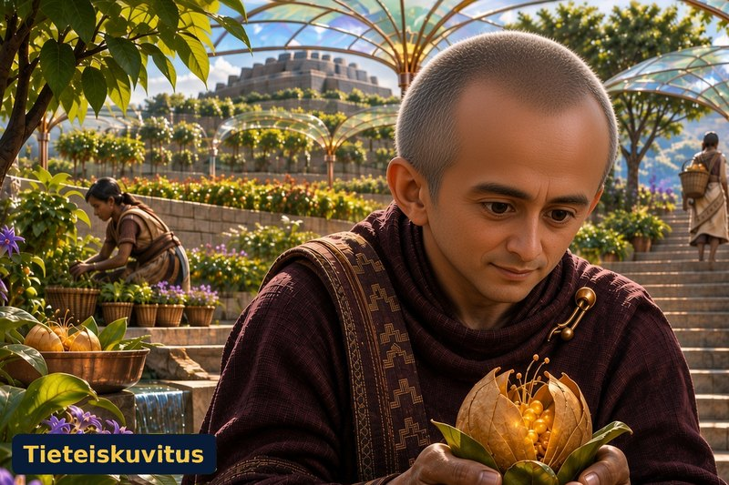

Gesichter der Steinstadt
Fiktive Geschichte. KI-Illustrationen einer erfundenen Steinstadt. Jedes Paar zeigt zuerst Jani Korpis Quellmaterial und dann eine KI-Illustration, die vom Umriss des Schädels inspiriert ist. Das meiste Quellmaterial sind Fotos aus Peru; Paar 02 ist aus Videostandbildern zusammengesetzt, und die Paare 12–13 enthalten Videobilder der Skulpturen in Kairo. Die Steinstadt und ihre Bewohner sind erfunden.
Ein Tag in der Steinstadt (Fiktion)
Diese Geschichte ist erfunden. Sie beschreibt nicht die Geschichte Perus oder Ägyptens, und ihre Figuren haben keine Verbindung zu den Verstorbenen auf den Fotos. Die Geschichte verbindet die dreizehn Illustrationen zu Ereignissen eines einzigen erfundenen Tages.
Die Steinstadt ist in Terrassen an einem Berghang gebaut. Kanäle bringen Wasser aus höher gelegenen Quellen, und Glasdächer beschatten die Gassen. Alles in der Stadt wird gemessen: die Fugen der Steine, die Höhe des Wassers und der Winkel des Lichts. Messen ist hier eine gemeinsame Sprache.
Drei Menschen stehen im Mittelpunkt des Tages. Der Optiker Ilun schleift die Prismen, mit denen die Vermesser der Stadt Winkel ablesen. Die Wasserhüterin Sava sorgt dafür, dass jede Terrasse an die Reihe kommt, Wasser zu bekommen. Die Weberin Tiru fertigt Sonnensegel, die Markt und Gärten vor der Mittagssonne schützen.
Am Morgen bemerkt Sava, dass zu wenig Wasser die untersten Terrassen erreicht. Der Fehler kann im Gefälle eines Kanals, in einer gebrochenen Fuge oder in einer Schleuse liegen. Im Lauf des Tages sucht die Stadt gemeinsam nach dem Fehler: Ein Steinmetz prüft die Fugen, eine Gärtnerin liest die Zeichen der Trockenheit an den Pflanzen, und Bauleute bringen ein neues Glasdach über die Stelle, an der das Wasser verteilt wird. Auf dem Markt tauschen die Leute Mais, Körbe und Neuigkeiten.
Am Abend fließt das Wasser wieder. Tiru flickt den Rand eines Sonnensegels, und der Kanalvermesser stellt die letzte Schleuse ein. Die Formen stammen aus Janis Fotos; Ereignisse, Namen und Figuren sind erfunden.
01 · Der Optiker justiert ein Prisma


Geschichte (Fiktion): Der Morgen beginnt in der Messwerkstatt. Ilun dreht ein Prisma, bis der Lichtstrahl seine Marke trifft. Sava wird später mit demselben Prisma die Winkel des Kanals ablesen, deshalb muss die Arbeit fertig sein, bevor die Sonne über den Terrassen aufgeht.
Ausgangspunkt: Die Breite der Stirn und der Abstand der Augenhöhlen bestimmten die Form des oberen Gesichts. Kiefer und Mund sind Entscheidungen des Illustrators.
Originalfoto 01 und Beobachtungen · Die Paare 04 und 10 zeigen möglicherweise dasselbe Objekt wie dieses Paar.
Mehr über die Seite lesen und alle 13 Paare zeigen
Die Seite beruht auf Janis Idee einer fortgeschrittenen, erfundenen Gesellschaft, die den Menschen vorausging. Die Schädel auf den Quellfotos sind menschliche Überreste. Im untersuchten Paracas-Material wurde der lange Kopf als in der Kindheit vorgenommene Formung gedeutet; die individuellen Details genau der Schädel, die Jani fotografierte, sind nicht bestätigt. Die Steinstadt und ihre Bewohner sind erfunden. Die Schädel auf den Quellfotos sind menschliche Überreste, deren Herkunft und Sammlungsgeschichte nur teilweise bekannt sind (siehe Faktenseite). Deshalb stellen die Illustrationen nicht diese Menschen dar, und die Schädelfotos dienen hier nur als Ausgangspunkt für Formen. Das für die Illustrationen verwendete KI-Werkzeug ist in den Bilddaten nicht vermerkt. Das kupferrote, wellige Haar, der betonte obere Schädel und Hinterkopf, die großen Augen sowie das kleine Kinn und die kleine Nase sind künstlerische Entscheidungen, inspiriert von der Amarna-Kunst. Die Illustration ist keine Gesichtsrekonstruktion und kein Forschungsergebnis über Augen- oder Haarfarbe.
Jedes Paar zeigt zuerst Janis Foto und daneben oder darunter eine KI-Illustration, die vom Umriss des Schädels inspiriert ist – also Fiktion. Die Nummer verbindet Quellfoto und Illustration. Auf den Quellfotos fehlt oft der Unterkiefer, daher sind Kiefer und Mund Entscheidungen des Illustrators. Mimik, Hautton, Haare und Alltag der Figuren gehören zur Steinstadt. Die Illustration kann nichts über Gesichtszüge, Art oder Aussehen der Verstorbenen aussagen.
Was erzählen die Schädel?Faktenseite: Fotos 01–11, Ausstellungstexte und veröffentlichte Forschung.
02 · Eine Steinladung fährt durch die Gasse


Geschichte (Fiktion): Eine Ladung Steine bewegt sich durch eine schmale Gasse zur untersten Terrasse. Der Fahrer weiß nur, dass bis zum Abend neue Blöcke für den Kanalrand gebraucht werden. Noch weiß niemand, wo der Fehler liegt.
Ausgangspunkt: Die Stirn der Figur steigt recht steil an. Vorbild war der helle Schädel in der oberen Reihe der Videozusammenstellung.
03 · Die Steinmetzin prüft eine Fuge


Geschichte (Fiktion): Eine Steinmetzin untersucht eine alte Fuge des Kanals durch eine Linse. Die Fuge ist intakt. Sie schickt Sava Nachricht: Der Fehler liegt nicht im Stein, sondern irgendwo weiter oben.
Ausgangspunkt: In der nach rechts gewandten Seitenansicht ist die wichtigste Form die Linie von der Stirn zum nach hinten gewölbten Hinterkopf.
04 · Der Gärtner untersucht eine Samenkapsel



Geschichte (Fiktion): Auf der untersten Terrasse öffnet ein Gärtner eine Samenkapsel und sieht, dass sie zu früh vertrocknet ist. Er sagt, dass seit mehreren Tagen weniger Wasser ankommt.
Ausgangspunkt: Die runde Form von Foto 01 kehrt im oberen Gesicht wieder. Die Hände helfen, die Proportionen des Quellfotos einzuschätzen.
Originalfoto 04 und Beobachtungen · Die Paare 01 und 10 zeigen möglicherweise dasselbe Objekt wie dieses Paar.
05 · Die Wasserhüterin misst die Höhenunterschiede des Kanals


Geschichte (Fiktion): Sava stellt ein Nivelliergerät auf den Kanalrand und misst die Höhenunterschiede Punkt für Punkt. Die Messung zeigt, dass der Kanal in die richtige Richtung fällt. Der Fehler muss also an der Verteilstelle oder in einer Schleuse liegen.
Ausgangspunkt: Ausgangspunkt war das nach links gewandte Profil des Schädels im Vordergrund. Die Kurve des Hinterkopfs setzt sich hinter dem Ohr fort.
06 · Die Weberinnen prüfen ein Tuch


Geschichte (Fiktion): Die Weberinnen halten ein dünnes Tuch gegen das Licht. Tiru braucht ein Sonnensegel über der Verteilstelle, damit das Wasser in der Mittagshitze nicht verdunstet. Das Tuch muss leicht, aber dicht sein.
Ausgangspunkt: Der Scheitel des linken Schädels fällt nach hinten ab. Der Umriss des rechten steigt steiler an.
07 · Begegnung auf dem Maismarkt


Geschichte (Fiktion): Auf dem Maismarkt tauschen drei Stadtbewohner Waren und Neuigkeiten. Ein Gerücht über den Wassermangel macht seit dem Morgen die Runde. Der Markt einigt sich darauf, dass Bauleute ein neues Glasdach zur Verteilstelle bringen.
Ausgangspunkt: Die drei Blickwinkel gaben die Idee zu drei unterschiedlichen Gesichtsumrissen. Die mittlere Marktfigur ist als Erwachsene gedacht.
08 · Zwei Bauleute tragen ein Glasdach durch das Tor


Geschichte (Fiktion): Zwei Bauleute tragen ein gewölbtes Glasdach durch das Tor. Es ist schwer und zerbrechlich, deshalb gehen sie langsam und sehen sich bei jedem Schritt an.
Ausgangspunkt: Die steilere Form des linken Schädels und die sanftere Stirnlinie des rechten erkennt man am besten im Seitenvergleich.
09 · Der Klang des Wasserrads


Geschichte (Fiktion): Das Wasserrad klingt falsch. Sava und ihre Helferin hören hin und finden an der Verteilstelle ein klemmendes Tor. Als das Tor freikommt, ändert sich der Ton des Rades, und das Wasser beginnt zu fließen.
Ausgangspunkt: Die unterschiedliche Neigung des linken und des rechten Kopfes gibt zwei Bewohnern, die sich über das Wasserrad beugen, ihre Gesichter.
10 · Der Flötenspieler in der Steingasse


Geschichte (Fiktion): Als das Wasser wieder fließt, verlässt Ilun seine Werkstatt und spielt in der Gasse auf seiner Flöte ein Signal, das der ganze Hang kennt. Die oberen Terrassen antworten mit derselben Melodie.
Ausgangspunkt: Die Seitenansicht zeigt den runden Scheitel und den Rand der Augenhöhle. Die Form von Lippen und Kiefer des Spielers ist erfunden.
Originalfoto 10 und Beobachtungen · Die Paare 01 und 04 zeigen möglicherweise dasselbe Objekt wie dieses Paar.
11 · Korbtausch in der Terrassenstadt


Geschichte (Fiktion): Auf den Terrassen tauschen die Leute Körbe. Der Gärtner schickt die ersten geretteten Pflanzen zum Markt, und von der Nachbarterrasse kommt Obst zurück.
Ausgangspunkt: Aus den vielen Umrissen in der Vitrine entstand eine Stadtansicht. Die Bewohner im Vordergrund wurden für diese Szene entworfen.
12 · Die Weberin flickt ein Schattentuch

Achten Sie auf den Bogen des Schädeldachs, die Linie der Stirn und darauf, wie weit der Hinterkopf reicht. Bei Fotos aus verschiedenen Richtungen lassen sich genaue Proportionen nicht vergleichen. Unten die Deutung des Illustrators.

Geschichte (Fiktion): Als der Abend kommt, flickt Tiru den Rand des Sonnensegels. Es hat die Verteilstelle den ganzen Nachmittag geschützt, und der Wind hat ein kleines Loch in seine Ecke gerissen. Sie zieht den Faden vor Einbruch der Dunkelheit durch.
13 · Die Kanalvermesserin stellt eine Schleuse ein

Achten Sie auf den Bogen des Schädeldachs, die Linie der Stirn und darauf, wie weit der Hinterkopf reicht. Bei Fotos aus verschiedenen Richtungen lassen sich genaue Proportionen nicht vergleichen. Unten die Deutung des Illustrators.

Geschichte (Fiktion): Zuletzt stellt der Kanalvermesser die Schleuse für die Nacht ein und notiert die Messungen des Tages für Sava. Am Morgen wird Iluns Prisma prüfen, ob die Winkel über Nacht gehalten haben.
Kairos Steingesichter und Perus Schädel
Die Amarna-Köpfe sind Skulpturen, und die Museen beschreiben das langgestreckte Schädeldach als Stilmerkmal der Amarna-Kunst (Global Egyptian Museum, JE 44869 · Ägyptisches Museum Berlin, ÄM 14145). Die peruanischen Schädel sind menschliche Überreste; im untersuchten Paracas-Material wurde der lange Kopf als im Kindesalter vorgenommene Formung gedeutet (Forschungshintergrund). Die Verbindung zwischen ihnen ist nur bildlich.
Die Paare 12 und 13 stellen die Steinköpfe, die Jani am 15. Februar 2024 im Ägyptischen Museum in Kairo filmte, neben die peruanischen Schädelfotos und die Gestalten der Steinstadt. Die Kairoer Ausgangsbilder sind Ausschnitte aus Standbildern von Janis Video (Museumsrundgang ab 51:31). Die Gesichter Umstehender wurden unkenntlich gemacht. Die Kairoer Fotos und der Forschungshintergrund stehen auch auf der Faktenseite: Kairo 2024.
Die Objektnummern sind auf Janis Einzelbildern nicht zu erkennen, daher ist die Objektkarte des Museums ein Vergleichspunkt und keine Identifizierung. Zur Sammlung des Ägyptischen Museums in Kairo gehört der in Tell el-Amarna gefundene Quarzitkopf JE 44869, der laut Global Egyptian Museum wahrscheinlich Meritaton darstellt, die älteste Tochter Echnatons. Die Deutsche Orient-Gesellschaft grub ihn 1912 in der Werkstatt des Bildhauers Thutmosis aus (Global Egyptian Museum). Ein steinernes Gesicht einer Amarna-Prinzessin desselben Typs befindet sich auch in New York (The Met, Head of a princess from a group statue). Die eigene Objektkarte des Kairoer Museums: Head of Princess, daughter of Akhenaten.
Dieselbe Präsentation im peruanischen Video

Das gemeinsame Merkmal hilft, die Vitrine zu identifizieren. Der genaue Fundort und die Identität der Objekte in der Vitrine bleiben offen. Foto 09 auf der Faktenseite.
Ein weiteres Beispiel aus Amarna: das Berliner Familienrelief

Das Berliner Familienrelief zeigt, wie die Seitenprofile der Königsfamilie auch in eine flache Steinfläche eingraviert dargestellt wurden. Die Schädeldächer der Töchter verlängern sich nach hinten. Laut Museum ist das Merkmal ein reines Stilmittel und kein Zeichen einer erblichen oder absichtlich herbeigeführten Form (Beschreibung des Reliefs durch das Museum, auf Englisch).
Mimik, Hautton, Haare und Alltag der Gestalten gehören zur erdachten Steinstadt. Einige der Fotos zeigen dasselbe Objekt aus verschiedenen Richtungen.